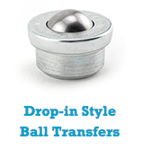
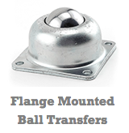
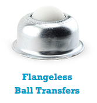
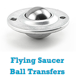
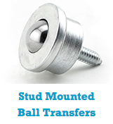

Denver Bearings is a distributer of ball bearing casters and ball transfer systems and one of the most innovative. Unlike most of our competitors, we distribute a broad and rapidly expanding product line in the USA. Our quality is unsurpassed and we pride ourselves on our extensive inventory. Whether it's 10 ball transfer units or 10,000, our responsive staff ensures your product is on a truck the day we receive your order. Whether used in the traditional 'ball up' position for ball transfer tables or as a caster in the 'ball down' orientation for rolling applications such as retail store displays, Denver Bearings is ready with the right product for your unique need.
Products Available





